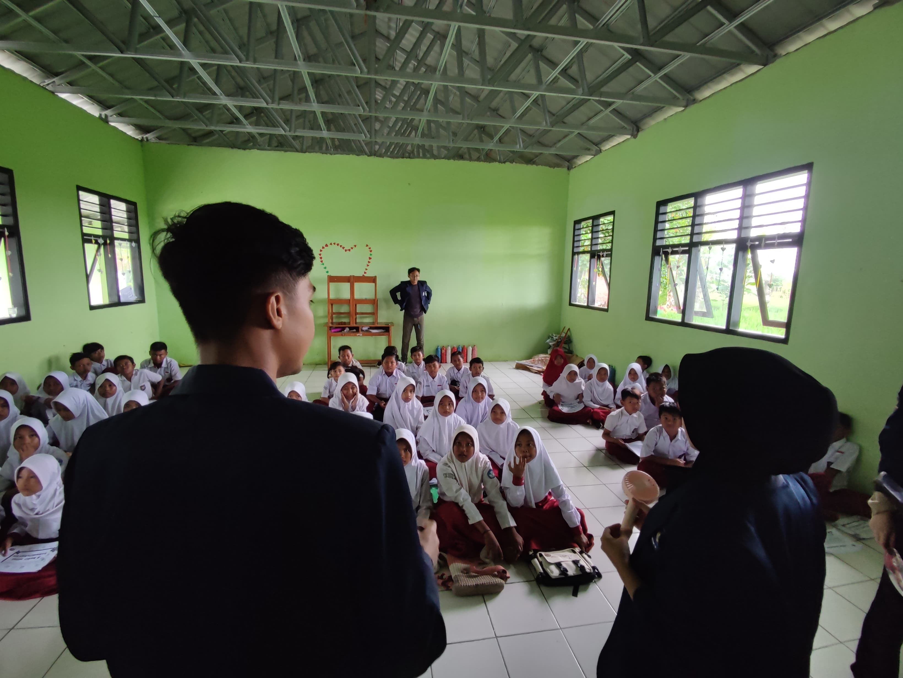

Visi
Mendukung Terwujudnya Kabupaten Karawang Yang Sejahtera Berbasis Pembangunan Berkeadilan Dilandasi Iman dan Taqwa
Misi
Meningkatkan kualitas pelayanan umum pemerintahan, kesejahteraan sosial melalui pertanian, sumber daya manusia melalui pendidikan, peran serta masyarakat untuk Good Governance, dan infrastruktur melalui penataan RT/RW serta transportasi.

CANDI DJIWA
Desa SegaranCandi Jiwa merupakan sebuah gundukan tanah seperti bukti kecil yang biasa disebut penduduk unur jiwa berbentuk lonjong

CANDI BLANDONGAN
Desa SegaranSitus ini pertama kali di survei olehtim arkeologi FSUI pada tahun 1984, antar tahun 1992 dan 2000 situs ini

MUSEUM CAGAR BUDAYA
Desa SegaranMuseum tersebut digunakan sebagai gedung penyelamat Situs Batujaya Kab.Karawang. Gedung tersebut dibangun sejak tahun 2002 hingga 2004 dan masa penataan 2 tahun (2005-2006)
Berita dan Informasi

Bersama Desa, Membentuk Masa Depan: Peresmian KKN Mahasiswa
Universitas Budi Luhur merayakan semangat pengabdian mahasiswa melalui kegiatan Kuliah Kerja Nyata (KKN) di Desa Segaran, Batujaya, Kabupaten Karawang. Dalam suasana kebersamaan.
Last updated 3 mins ago
Nyalakan Jejak: Mahasiswa KKN Membuat Plang Rumah dan Jalan untuk Masyarakat
Mulai dari kerja bakti yang memperbaiki infrastruktur lokal hingga pembuatan plank RT/RW yang memperkuat fondasi partisipasi masyarakat.
Last updated 3 mins ago

Merawat Warisan: Mahasiswa KKN Bersihkan Lingkungan Sekitar Candi
mahasiswa juga terlibat dalam upaya melestarikan warisan budaya dengan aktif terlibat dalam kegiatan pembersihan candi.
Last updated 3 mins ago

Membangun Masa Depan: Mahasiswa KKN Mengajar di SD
Mahasiswa Budi Luhur berdaya dan inspiratif! Mereka saat KKN memberikan pengajaran kepada anak-anak SD, juga menyemai semangat pendidikan dan kebersamaan di Desa Segaran.
Last updated 3 mins ago
Bijak Bermain, Bijak Belajar: Mahasiswa KKN di Kelas PAUD
Mahasiswa Budi Luhur menebarkan keceriaan dan ilmu pada anak-anak PAUD di Desa Segaran! Kegiatan KKN ini menjadi wujud nyata komitmen mereka untuk mendukung perkembangan pendidikan anak usia dini
Last updated 3 mins ago
Tanamkan Cinta pada Alam: Mahasiswa KKN dan Penanaman di Sekitar Situs
Mahasiswa Budi Luhur berperan aktif dalam menjaga kelestarian lingkungan! Melalui KKN, mereka berkomitmen menanam tanaman di sekitar tempat wisata, menciptakan harmoni antara pendidikan dan pelestarian alam.
Last updated 3 mins ago
Jejak Peduli Lingkungan: Mahasiswa KKN dan Pemberian Tong Sampah untuk Wisata
Mahasiswa Budi Luhur aksi nyata dalam menjaga kebersihan lingkungan! Melalui KKN, mereka memberikan kontribusi dengan memasang tong sampah, menjadikan tempat ini lebih bersih dan nyaman untuk semua.
Last updated 3 mins ago
Cahaya Bimbingan: Mahasiswa KKN Membimbing Anak-Anak Belajar Mengaji
Mahasiswa Budi Luhur membimbing dengan penuh kebaikan! Di tengah KKN, mereka memberikan pengajaran mengaji kepada anak-anak dengan harapan mewariskan nilai-nilai keagamaan dan cinta ilmu.
Last updated 3 mins ago